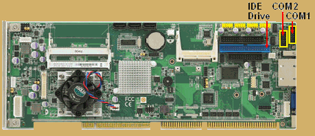
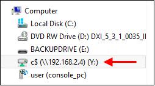
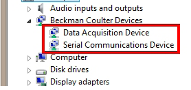
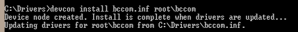
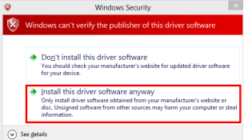
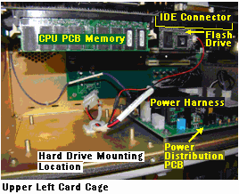
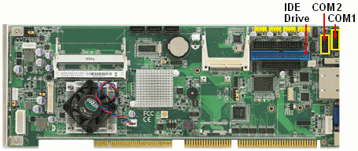
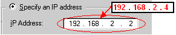
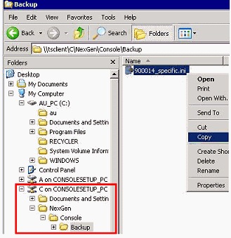
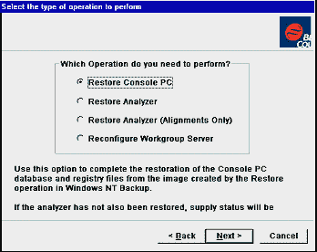

This procedure describes how to replace the hard drive on the analytical unit of a DxI instrument.
Note:
Other hardware failures can cause the hard drive on the analytical unit (AU) to not work properly. These hardware failures should be investigated prior to replacing the hard drive. Refer to
Software: Troubleshooting AU/UI Communication Loss procedure.
The replacement hard drive for the AU uses Windows software only. You must install operating software for the instrument into the new hard drive.
Caution:Console PC and AU hard drive must have the same Windows image and System software or the system is resulting in no communications and unable to install system software.
AU hard drive with Windows 8 image requires the Atom CPU PCB, Mini PC or PC with Windows 8, and system software 5.3.1 or above. Refer to
Mod 11825 DxI Software 5.3.1 Install document for more information.
AU hard drive with latest Windows XP image requires the PC with Windows XP and system software 5.2 and above or below.
Replacing or upgrading the hard drive with Windows 8 image will reset supply, run hours, and test counts information.
NVRAM is eliminated on Windows 8 because the drivers don't support direct memory access to the NVRAM PCB. Since the substrate and waste bag information was stored on the NVRAM, both items will need to be replaced prior to operating the instrument.
Power off the analytical unit using the power switch inside the lower right front cover.
Remove the upper left card cage cover (four thumb screws).
Remove the flash hard drive from the CPU PCB.
Connect the new flash hard drive directly to the IDE connector on the CPU PCB.
Caution: Installing the Flash Drive into the IDE connector reversed or off by one pin may cause the Flash Drive power cable to BURN UP, or the flash drive will not boot to Windows. The CPU PCB and flash drive are typically not damaged by mis-connection.
The hard drive connector on the newer CPU PCB is colored blue and located slightly back from the outside edge of the PCB.
Flash Drive Mounting
Atom CPU PCB

Connect the flash drive power harness to the HDD power harness or to the CPU power distribution PCB hard drive power connector.
Power on the AU and allow the software to boot.
Transfer the alignment file to the AU folder.
Verify the USB BACKDRIVE is plugged into the console PC.
Map the AU network drive to the console PC.
Press the
Windows key and click on the
File Explorer icon to open it.
Right click on
Computer and select
Map Network Drive.
In the Folder window, type:
\\192.168.2.4\c$
Verify the "Reconnect at Sign In" box is checked and select
Finish.
Browse to:
BACKDRIVE (E:) > Backup folder.
Right click on the xxxxxx_specific.ini file and select
Copy. The xxxxxx is the serial number of the instrument.
Navigate to the mapped AU drive
(C$ (\\192.168.2.4), right click on the
AU folder, and select
Paste.

Note: If there is no AU folder, right click on the mapped AU drive
(C$ (\\192.168.2.4), select
New > Folder and name the new folder
AU . Then paste the
xxxxxx_specific.ini file into the
AU folder. The letter of the mapped network drive is not significant and may vary depending on other drives in use. It commonly shows up as (Y:) or (Z:).
Right click on the xxxxxx_specific.ini file in the AU folder, select
Rename, and change the file name to specific.ini.
Right click in the
AU folder, and select
Paste to paste a second copy of the xxxxxx_specific.ini file into the AU folder.
Note: This is a spare copy of the file that might be needed after installing the software.
Activate Windows 8 on the AU hard drive.
Note: Windows 8 on the console PC is already activated but the AU hard drive can't be activated until it is installed on the CPU PCB.
Open a remote desktop connection to the AU.
Press the
Windows key and select the
Remote Desktop icon or type
remote, and open the Remote Desktop Connection program.
Type
192.168.2.4 into the Computer field and select
Connect.
Enter
user for the User Name and
tech for the password if prompted.
If prompted at the RDS warning screen, check the box for "Don't ask me again for connections to this computer" and select
Yes.
Note: For Windows 8e, the default console IP address is 192.168.2.3 and the AU IP address is 192.168.2.4. Neither IP address changes during the software load process.
Modify the sppsvc registry setting to allow the Windows activation to complete.
Press the
Windows key and double click on the
Command Prompt icon to open.
Type
slui.exe and press
Enter.
Select the
Activate by Phone icon.
If the
Activate by Phone icon is not available, select the
Activate icon.
The activation will fail because there is no internet connection. Select
Close to the failed activation window.
The
Activate by Phone icon should now be available. If the
Activate by Phone icon is still not available, reboot the instrument (not PC) and try again.
Select the
Activate by Phone icon.
Change the location to
United States and select
Next.
Call the phone number listed and follow the instructions to activate Windows.
Note: There is an option to manually enter the activation numbers or use a smart phone to enter and receive the activation numbers. Either option works for the activation.
Install the DxI instrument software onto the new AU hard drive.
Insert the software CD into the external CDROM drive on the PC and press the install button to load software.
Note: The software install program should start automatically. It may take up to 3 minutes for the program to launch. If the program doesn’t auto launch, it can be manually started by selecting the Computer icon on the desktop and then double clicking on the
D: DVD drive.
Press the
Finish button when complete to restart the console and AU.
Note: When rebooting the Privacy & Security compliant Windows 8 or Windows 10 PC, you must enter security password "Access2Admin" when prompted to launch Windows.
Note: If UI initialization fails and a
Failed to Synchronize Clocks notification is displayed, verify the
Time Zone setting on the console PC matches the setting (GMT/UTC) on the AU. Refer to
Verifying the Date and Time Settings from Windows Desktop.
Remove the software CD from the external CDROM drive.
Update the device driver versions on the AU hard drive.
Note: The AU hard drive image does not have the current device driver versions on it. Software version 5.3.1 transfers the correct driver versions to the AU hard drive but it can't install them. The drivers must be manually installed. The drivers communicate with all hardware devices on the instrument and failure to install the correct driver versions may result in device motion errors for any motor on the instrument.
Open a Remote Desktop connection to AU.
Press the
Windows key, type
device manager and select the
Device Manager icon under the settings search.
Click on the arrow next to
Beckman Coulter Devices to expand the menu.
Right click on
Data Acquisition Device, select
Uninstall, check the
Delete the driver software for this device box, and selectOK. If prompted to restart the computer, select
NO.

Right click on
Serial Communications Device, select
Uninstall, check the
Delete the driver software for this device box, and select
OK.
If prompted to restart the computer, select
Yes. Restart the AU (not PC) if not prompted.
Open another Remote Desktop connection to the AU after it has rebooted.
Press the
Windows key and double click on the
Command Prompt icon to open it.
Type
cd \drivers and press
Enter (there is a space between cd and \).
Type
devcon install bccom.inf root\bccom and press
Enter.

Select
Install this driver software anyway to the security message that appears.

Type
devcon install bcdaq.inf root\bcdaq and press
Enter.
Select
Install this driver software anyway to the security message that appears.
Close the command prompt.
Verify the correct device driver versions on the AU hard drive.
From the AU, press the
Windows key, type
device manager and select the
Device Manager icon under the
settings search.
Expand the
Beckman Coulter Devices directory, right click on
Data Acquisition Device, select
Properties, select the
Driver tab, and click on the
Driver Details button.
Verify the File version is
V11.2.0, then select
OK and
OK to close the Data Acquisition Device Properties window.
Repeat these steps to verify the
Serial Communications Device driver is
V11.2.0.
Close the Device Manager window and Remote Desktop connection to the AU.
Replacing the hard drive with Windows XP image and software version 5.2 or below do not affect supply or alignment information.
Replacing or upgrading the system software to software version 5.3.1 or above will reset supply, run hours, and test counts information.
NVRAM is eliminated on software version 5.3.1 or above, because the drivers don’t support direct memory access to the NVRAM PCB. Since the substrate and waste bag information was stored on the NVRAM, both items will need to be replaced prior to operating the instrument.
Specific.ini File
Restore from backup >> Restore Supplies from Analyzer does not work in SW V 5.3.1 or above where the AU NVRAM is simulated. All punctured reagents will need to be discarded if restoring from a previous backup (or immediate backup if the system was running when the issue occurred).
Power off the analytical unit using the power switch inside the lower right front cover.
Remove the upper left card cage cover (four thumb screws).
Remove the flash drive or disconnect the hard drive ribbon cable from the CPU PCB.
Connect the new flash drive directly to the hard drive IDE connector on the CPU PCB.
Note:
The hard drive connector on the newer CPU PCB is colored blue and located slightly back from the outside edge of the PCB.
The old HDD and the ribbon cable, if present, can be discarded or left in place.
Caution:
Installing the Flash Drive into the IDE connector reversed or off by one pin may cause the Flash Drive power cable to BURN UP, or the flash drive will not boot to Windows. The CPU PCB and flash drive are typically not damaged by mis-connection.

Figure 146: Flash drive mounting Figure 147: Atom CPU PCB

Connect the flash drive power harness to the HDD power harness or to the CPU power distribution PCB hard drive power connector.
Power on the AU and allow the software to boot.
Change the IP address on the new hard drive.
Note:
The replacement hard drive with
Windows XP comes configured with the default IP address 192.168.2.2. The software will not load properly until the address is changed.
Select
Start
> Programs > Accessories > Communication > Remote Desktop Connection. This launches the desktop sharing program on the console PC.
Enter IP address
192.168.2.2, and then select
Connect
and
OK when the security message appears.
Enter User name:
user and password:
tech to log-in to the AU via remote connection.
Note:
If a
New Hardware Wizard window pops up, select
Cancel.
If a
System Settings Change window pops up, select
No.
From the
AU Desktop, right click on the
My Network Places icon and select
Properties. This opens the
Network Connections window.
Right-click on Local Area Connection (no number), and then select
Properties from the
Network Connections window.
Right-click on Internet Protocol (TCP/IP), and then select
Properties from the
General tab.
Change the IP address to
192.168.2.4, and then enter
255.255.255.0 as the Subnet Mask.

Note:
If the IP address listed ends in a 1 or a 3, this may be the configuration screen for the console PC. Confirm that the address change is being made via the desktop sharing connection to the AU.
If there is a warning that another port already has the 2.4 address, disregard the warning and select the option to make this change.
The remote desktop connection to the AU will be lost after the IP address for the connected port has been changed. A blinking icon may appear in the upper right corner of the display.
Select
OK > OK, and then select the X in the upper right corner of the
Remote Desktop Connection window. This closes the connection.
Transfer the alignment file to the AU folder.
From the console PC, select
Start
> Programs > Administrative Tools > Remote Desktop Connection to AU PC. This launches desktop sharing.
Note: This connection does not require password entry.
Double-click the
Windows Explorer icon at the top left of the
AU Desktop. This opens an explorer window.
Double-click on
C on CONSOLESETUP_PC on the list of connected hard drives.

From the console PC, browse to C:\NexGen\Console\Backup folder.
Right click on the
xxxxxx_specific.ini file, and then select
Copy. xxxxxx is the serial number of the instrument.
From AU [AU_PC ( C: )], browse to the C:\AU folder.
Note: If there is no AU folder, right click on the AU C:\ drive and select
File > New > Folder. Name the new folder AU.
Right click in the AU folder, and then select
Paste to paste the
xxxxxx_specific.ini file into the AU folder.
Right click on the xxxxxx_specific.ini file in the AU folder, select
Rename, and change the file name to specific.ini.
Right click in the AU folder, and select
Paste to paste a second copy of the
xxxxxx_specific.ini file into the AU folder.
Note: This is a spare copy of the file that might be needed after installing the software.
(Perform this step only if upgrading to Software version 5.3.1 and higher) Change the SimulateNVM entry in the specific.ini file from no to yes.
Caution: The NV memory must be changed to simulated in specific.ini or the AUObj program will not launch resulting in no communication from the console to the AU (red user interface with status).
Press the
Windows key on the AU and open the
Windows Explorer icon.
Navigate to the
Local Disk (C:) > AU and open the
specific.ini file.
Select
Edit > Find, type
simulatenvm and press enter.
Change
SimulateNVM from No to
Yes.
Select
File > Save.
Close the specific.ini and windows explorer programs and the remote desktop connection to the AU.
Install the DxI instrument software onto the new AU hard drive.
Install Software version 5.3.1 and Higher
Insert the software CD into the external CDROM drive on the PC and press the install button to load software.
Note: The software install program should start automatically. It may take up to 3 minutes for the program to launch. If the program doesn’t auto launch, it can be manually started by selecting the
Computer icon on the desktop and then double clicking on the
D: DVD drive.
Press the
Finish button when complete to restart the console and AU.
Note: If UI initialization fails and a
Failed to Synchronize Clocks notification is displayed, verify the
Time Zone setting on the console PC matches the setting (GMT/UTC) on the AU. Refer to
Verifying the Date and Time Settings from Windows Desktop.
Remove the software CD from the external CDROM drive.
Insert the CD for the current version of software into the console PC CDROM drive, and then follow the on-screen messages to complete the installation.
Enter or confirm that the AU IP address is
192.168.2.4, and then enter the instrument serial number, if prompted.
Select
Yes to overwrite the AU software, and Select
Yes to update the PC software.
Select
Yes in response to the message
System in Ready or Not Ready mode. Console has been shut down and some system software components remain active.
Select
Finish
with the
Yes, I want to restart my computer option selected, to complete the software installation.
Note: Upon completion of the software loading, the console PC and the AU will reboot.
After the PC reboots, wait for the user interface status to update to
Ready,
Not Ready, or
Paused.
Caution: Do not initialize with
Remap selected before restoring the database. A remap at this point, sets the reagent packs to 50 counts or full in the instrument memory and requires that all punctured or used packs be unloaded and discarded.
Note:
The user interface status may not update for two to three minutes, while it waits for the instrument software to launch.
If the user interface status stops at
Paused, then press
Resume. The status will proceed to
Ready.
If UI initialization fails and a
Failed to Synchronize Clocks notification is displayed, verify the
Time Zone setting on the console PC matches the setting (GMT/UTC) on the AU. Refer to
Verifying the Date and Time Settings from Windows Desktop.
If a "not commissioned" message appears following the software installation, then the
specific.ini file on the AU was overwritten by the install process and will need to be restored.
To restore the
specific.ini file:
Select
Start
> Programs > Administrative Tools > Remote Desktop Connection to AU PC
.
Close any pop-up messages present on the AU desktop.
Browse to the AU folder, delete the
specific.ini file, and then rename the
xxxxxx_specific.ini file to
specific.ini.
Double click the
Y icon to launch the machine control program.
(Perform this step only on Software version 5.2 and below) Restore the instrument supply counts, if required.
Note: If the system was running samples when the AU hard drive failed, then you need to update the database on the PC console to restore the instrument supply counts.
From the console PC, press
[Alt] + [F4], and then enter the password
Access2Support (observing proper case) to exit the user interface.
Double click the
Poet Object Server icon at the bottom right corner of the display, and then select the X at the top right of the window that opens.
Select
shut down the server, and then close any error pop-up messages.
From the Console PC, select
Start > Programs > NexGen > Restore Utility .
In the Restore Utility window, select
Next
> Restore Console PC > Next.

Select
Restore Registry and Database > Next. If there is an error copying the files, confirm that you have exited the Poet Object Server and retry restoring the supply counts.
Select
Yes to the
Overwrite Registry and Database message, and then select
Next after the files have been copied.
Select
Next to the
IP address window.
Note: The server IP address may be listed as 127.0.0.1 on XP systems.
Select
Restore Supplies From Analyzer > Next.
Note: This step may require two to three minutes to complete.
Select
Next to the
Unloaded punctured packs window, and then select
Next to the
Unloaded unpunctured packs window.
Caution: When reagents are off-board their usage counts are not stored in the instrument memory. Any punctured reagents used after the backup and unloaded through the user interface before the AU hard drive failed, must to be discarded.
Select
Next, and then select the
Reboot option and
Finish.
Note: When the supply counts have been restored, the AU will reboot automatically. The user interface on the PC will not appear to communicate with the AU for up to five minutes while the AU reboots.
If this is an integrated DxI, performs these steps to verify or configure network connection 2 IP address on AU side.
Open a Remote Desktop Connection to the AU.
Select
Start > Settings > Network Connections .
Right click on
Local Area Connection 2, select
Properties, select
Internet Protocol (TCP/IP) option, and then select
Properties.
Verify or change the IP address if needed to the following:
DxI 1 IP 134.217.96.188, Subnet Mask 255.255.255.0
DxI 2 IP 134.217.96.189, Subnet Mask 255.255.255.0
DxI 3 IP 134.217.96.190, Subnet Mask 255.255.255.0
DxI 4 IP 134.217.96.191, Subnet Mask 255.255.255.0
Close all the covers and remove any interlock bypasses.
In the user interface, select
Diagnostics > Initialize.
Select the
Clean Out All Positions button, select the
Remap button, and then select
OK.


 Note: If UI initialization fails and a Failed to Synchronize Clocks notification is displayed, verify the Time Zone setting on the console PC matches the setting (GMT/UTC) on the AU. Refer to Verifying the Date and Time Settings from Windows Desktop.
Note: If UI initialization fails and a Failed to Synchronize Clocks notification is displayed, verify the Time Zone setting on the console PC matches the setting (GMT/UTC) on the AU. Refer to Verifying the Date and Time Settings from Windows Desktop.